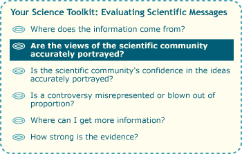
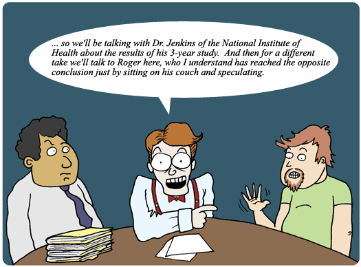
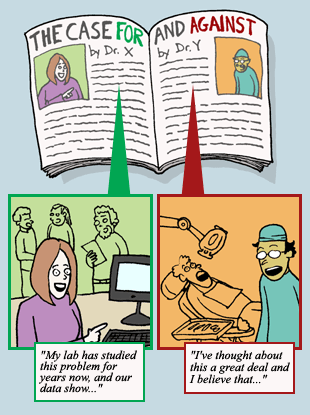

Balanced reporting is generally considered good journalism, and balance does have its virtues. The public should be able to get information on all sides of an issue — but that doesn't mean that all sides of the issue deserve equal weight. Science works by carefully examining the evidence supporting different hypotheses and building on those that have the most support. Journalism and policies that falsely grant all viewpoints the same scientific legitimacy effectively undo one of the main aims of science: to weigh the evidence.

Our sample article on global warming, for example, balances its report like this:
Some scientists believe that human-produced carbon dioxide is causing Earth to warm dangerously. This view is supported by some ice core studies. However, skeptics question this opinion, arguing that we lack evidence that the warming is not simply a natural part of the planet's climate fluctuations.
and then ends it with more uncertainty:
However, scientists have not yet come to a conclusion regarding the main question inspired by the ice core data: Do higher carbon dioxide levels actually cause temperature increases?
This report maintains journalistic standards for balance, but it's not a very accurate depiction of the state of science at the time. Even in the early 1990s, scientists who studied the issue had weighed the evidence and concluded that global warming could likely be traced to humanity's increased production of greenhouse gases, like carbon dioxide. Yet the newspaper article seems to give equal weight to the few skeptics. And this false balance is not unusual. A survey of articles in topnotch U.S. newspapers published between 1988 and 2002, found that 52.6% of those that dealt with global warming balanced the human contribution to global warming with a skeptical viewpoint. Meanwhile, the scientific evidence for the human contribution to global warming became ever more convincing. A survey of 928 scientific journal articles published between 1993 and 2003 found that none of them disagreed with the idea that human activities are causing global warming! Such a disconnect between the true views of the scientific community and those represented in the popular press make it difficult for a casual reader to get an accurate picture of the science at stake.
WHO'S THE EXPERT?

Some popular science stories provide journalistic balance by including the views of two scientists — one on each side of an issue. For example, a magazine article about the origins of life might quote Scientist A, who argues that we have a good understanding of the chemical reactions that led up to the origin of life, and Scientist B, who argues that we don't know much about these reactions now and that we never will. In untangling such conflicting messages, it pays to investigate each scientist's area of expertise. Knowing that Scientist A is a biochemist who studies the origins of life and that Scientist B is a physicist who works on electricity and magnetism could factor into your assessment of the controversy. Scientific knowledge is immensely deep and varies widely across fields. No single scientist can be an expert on everything. Also, beware of science stories that quote Dr. XYZ without explaining Dr. XYZ's area of expertise. Plenty of scientists don't have Ph.D.s, and plenty of doctors (e.g., those with Ph.D.s in English) don't necessarily have a strong scientific background.